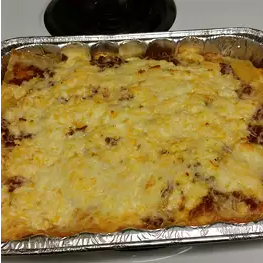

A Simple Lasagna Recipe

Description
Lasagna can be considered one of the oldest types of pasta, it is usually rectangular or ribbon shaped made from a dough based on flour and eggs. Filled with meat.
Ingredients Required
- 1 pack of lasagna noodles
- 1 pound lean ground beef
- salt and pepper to taste
- Spaghetti sauce
- A clove of garlic, minced
- 1/2 pound shredded Cheddar cheese
- A pint of ricotta cheese
Directions
- Bring a large pot of lightly salted water to a boil
- Add pasta and cook for 8 to 10 minutes until al dente
- Preheat oven to 175 degrees Celsius
- In a large skillet over medium-high heat, brown beef and season with salt and pepper
- Drain and stir in spaghetti sauce and garlic, simmer for 5 minutes
- In a medium bowl, combine the various cheeses and stir well
- On a pan, alternate layers of noodles, meat mixture and cheese mixture until pan is filled
- Bake in preheated oven for 30 minutes, until cheese is melted